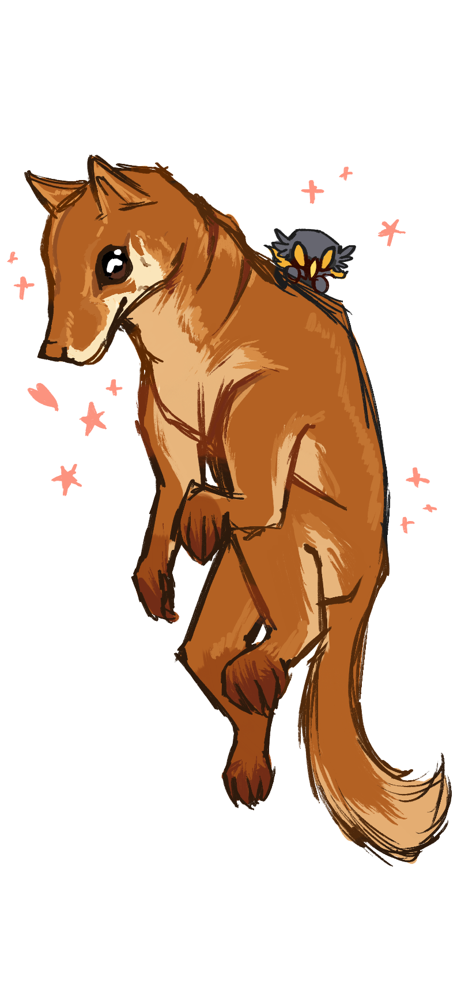

Stalwart Conviction: 
to stand firm on your beliefs and values. to hold enough love and respect for yourself that the expectations of those who are inconsiderate towards you do not sway nor topple you. you also offer a shoulder to lean on for those who struggle to stand with the same confidence (and swagger) as you do. those who possess such conviction also are pretty good at illuminating a stage~
thank you for teaching me how to live with conviction, connor.
i've never been good at standing up for myself. i would shapeshift my values and wants if it meant appeasing others, even if they had little consideration for me. i would sway. i would buckle immensely under the pressure. and, i was unhappy because of it. but i remember seeing how you held yourself, how you fought for yourself, how free of the expectations of others you were and are now. "i want to be like him," were always thoughts i had.
slowly i've come to understand that, even if it wasn't something deliberate that you wished to convey to me. i find myself standing a bit straighter, with a better understanding of who i am and who i want to surround myself with. and, that was all because of you. and i'm glad it was simply from you being yourself. you always help ground me, help me laugh, and help me smile through the good and the bad. thank you for always being there for me; for being my other half.
the future is so unknown and frankly terrifying. i can only imagine how it feels for you. i think we both know that there are no guarentees in life: some things happen so quickly, so suddenly, and so devastingly. yet, we persist. we continue moving onwards, despite those winds that wish to knock us down. and knowing you, i know you'll be okay. you can brave that unknown, no matter how uncertain and different it may be.
and although i have a long way to go, i will always be here if you need anything, like you have done for me. thank you for over a decade (more or less) of friendship, care, and love. happy thanksgiving!
love, stephen